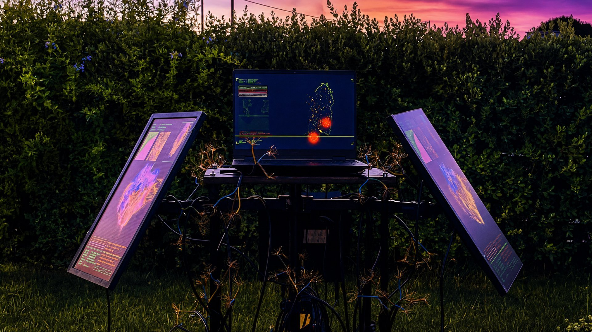
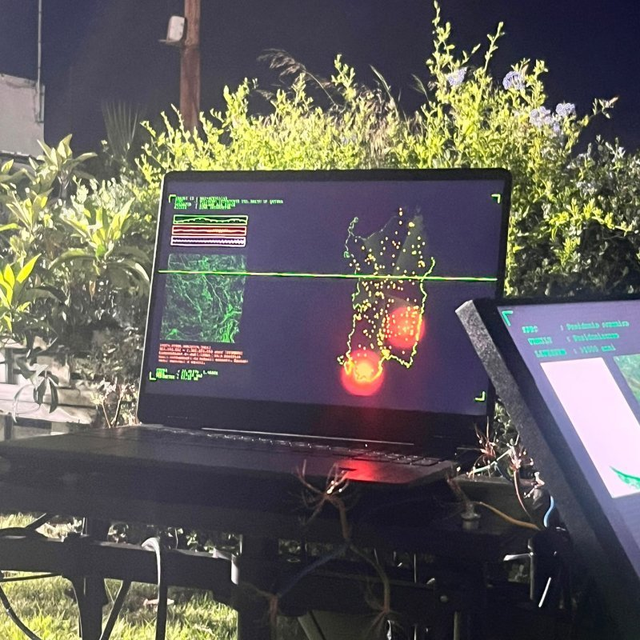
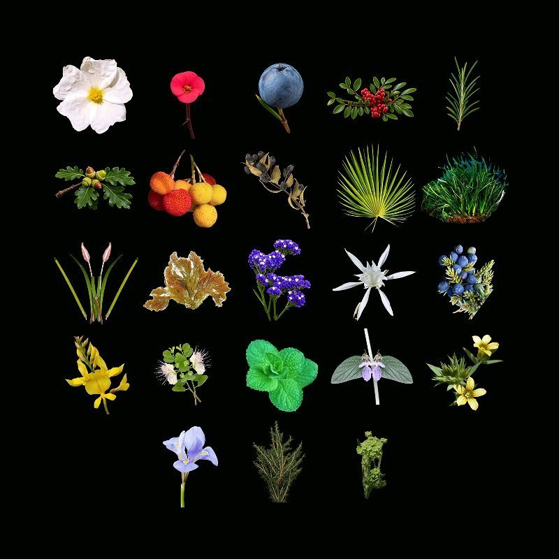
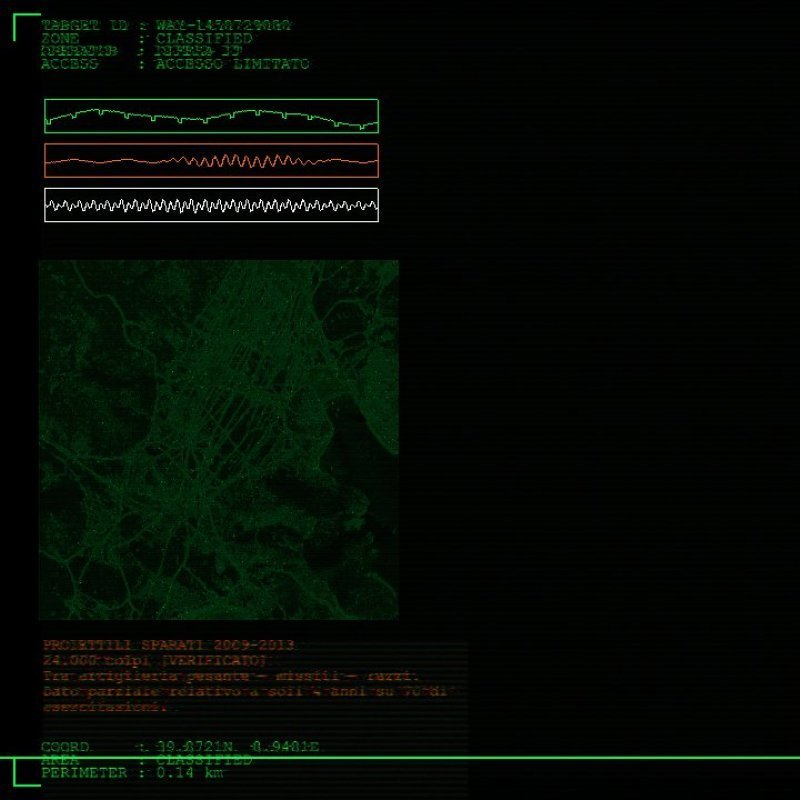
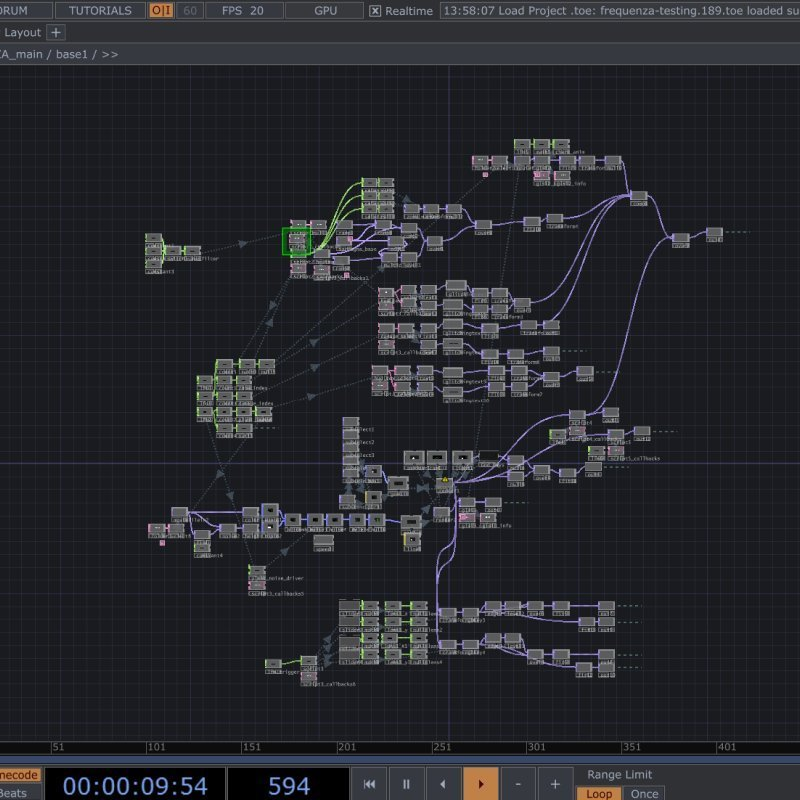
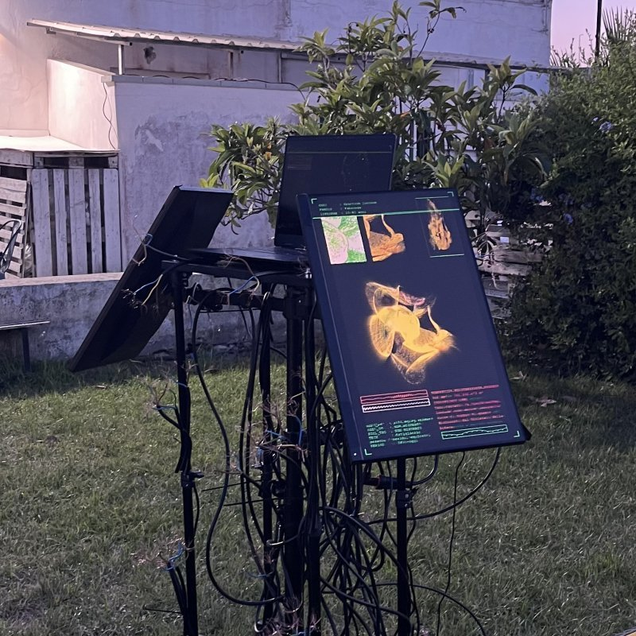
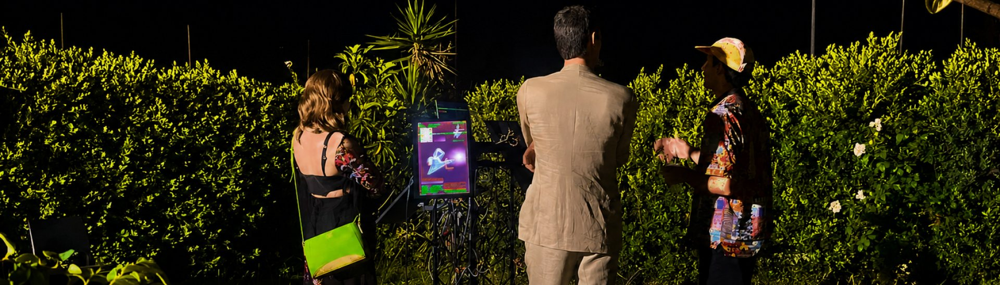
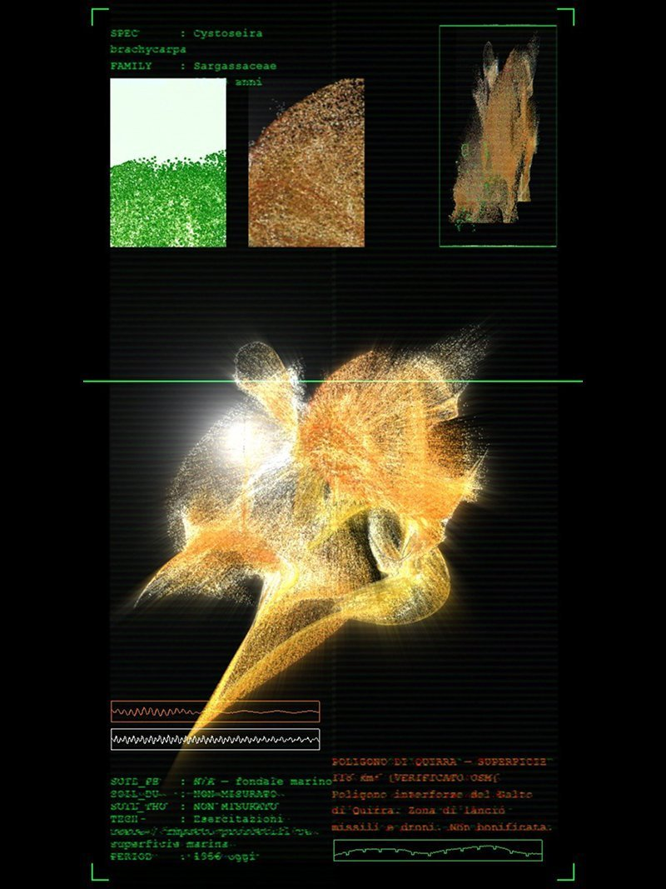
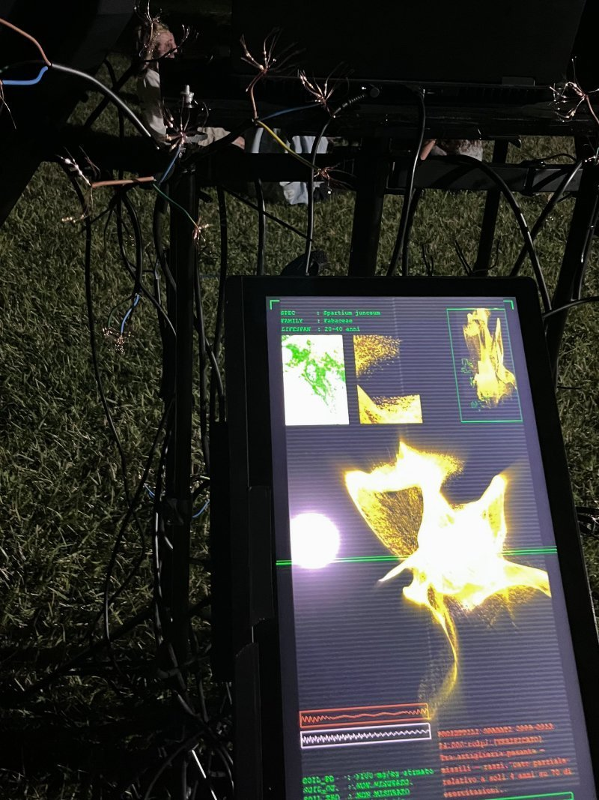
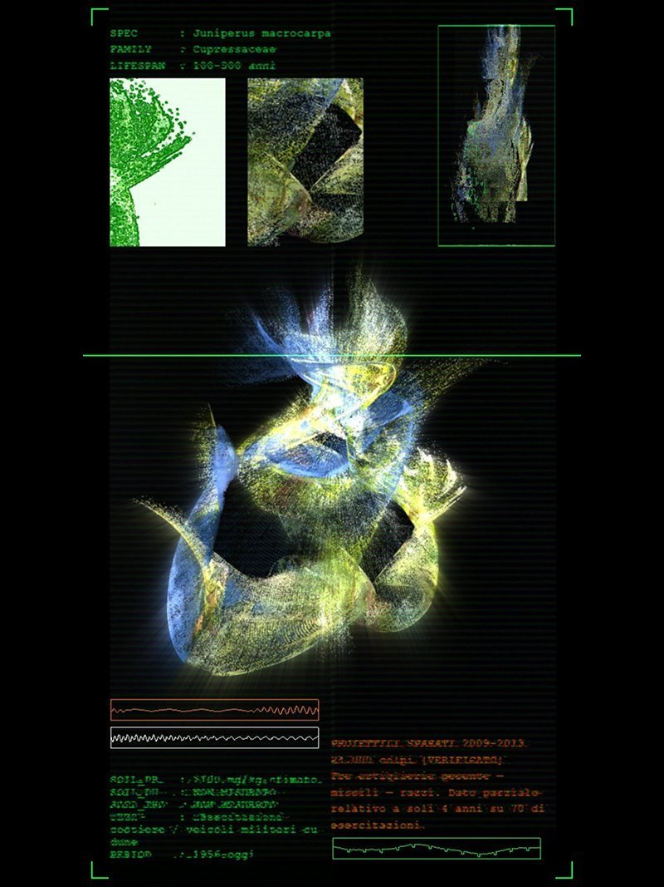

Frequenza
Le basi militari sarde restituite alla natura — un progetto narrativo speculativo

Un futuro in cui la natura ha già vinto
La Sardegna ospita decine di basi ed ex aree militari — territori sottratti, recintati, dimenticati. FREQUENZA immagina un futuro prossimo in cui quelle stesse aree sono state silenziosamente riconquistate dalla vegetazione: i perimetri si sgretolano, le antenne diventano rami, i segnali lasciano spazio al respiro del suolo. Non un monito né un'utopia, ma un'ipotesi — cosa resta di un territorio quando smette di essere controllato?
"Non una mappa del territorio occupato, ma un organismo che lo racconta dall'interno — segnale e radice nello stesso respiro."
Il sistema è costruito in TouchDesigner e si nutre di dati geografici reali, estratti da OpenStreetMap: i confini delle basi militari sarde diventano la struttura su cui cresce una vegetazione generativa. Pattern botanici, texture organiche e geometrie GLSL si sovrappongono ai perimetri cartografici, trasformando ogni base in un organismo che pulsa e si espande — un paesaggio che restituisce, in tempo reale, l'idea di un territorio riconquistato.






FREQUENZA prende forma in un'installazione fisica pensata per Cagliari, giugno 2026 — uno spazio in cui il sistema generativo si espande su superfici e proiezioni, restituendo al pubblico l'esperienza di un territorio che si rigenera sotto i suoi occhi.
Il progetto è attualmente in sviluppo. Ogni iterazione affina la relazione tra dato geografico e linguaggio visivo, avvicinando il sistema alla sua forma definitiva — un organismo digitale ancora in crescita, proprio come il paesaggio che racconta.


